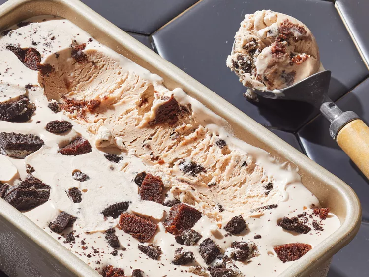

No Churn Ice Cream

With just a few simple ingredients and a bit of patience, you can create velvety-smooth scoops bursting with flavor.
Whip up a batch of lusciously smooth homemade ice cream without the fuss of churning.
This no-churn version is as simple as combining whipped cream for airy volume, sweetened condensed milk for silky sweetness, and your favorite flavorings or mix-ins to customize your creation.
From the classic vanilla bean to the boldness of salted caramel and the freshness of strawberry, the possibilities are endless
Ingredients
- 2 Cups Chilled Heavy Cream
- 1 Can Sweetened Condensed Milk
- 1 Tablespoon Vanilla Extract
- 1/4 Teaspoon Salt
Steps
- Gather all ingredients.
- Add heavy cream to the bowl of a stand mixer with a whisk attachment.
Beat on medium-high speed until stiff peaks form, 2 to 3 minutes.
- Add sweetened condensed milk, vanilla and salt.
Mix on low speed until fully combined, 20 to 30 seconds, scraping sides of bowl as needed.
- Transfer mixture into a 9x5-inch loaf pan, spreading evenly in the pan.
Cover with plastic wrap, gently pressing down to touch the ice cream mixture and seal out any air bubbles.
Freeze until firm, at least 6 hours before serving.